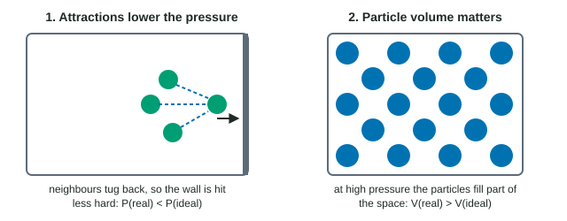

The kinetic molecular theory made two simplifications: gas particles have no volume, and they do not attract each other. Neither is exactly true. Gas particles are real molecules with real size, and the intermolecular forces you met at the start of this unit act in gases too. Most of the time these effects are tiny, which is why PV = nRT works so well. This page is about when they are not tiny.
Measuring how ideal a gas is
For an ideal gas, PV/nRT = 1 exactly. Measure P, V, n and T for a real gas, compute PV/nRT, and the distance from 1 tells you how far it departs from ideal. Below 1, the gas is behaving as if attractions dominate; above 1, as if particle volume dominates.
| Pressure (atm) | He | N2 | CO2 |
|---|---|---|---|
| 1 | 1.000 | 1.000 | 0.995 |
| 10 | 1.005 | 0.998 | 0.949 |
| 50 | 1.024 | 0.997 | 0.681 |
At 1 atm all three are within 1% of ideal. At 50 atm, CO2 is far below 1. Helium stays close to 1 and edges above it.
Cause 1: attractions between particles
A particle on its way to the wall is surrounded on one side by other particles and on the other by the wall. The attractions to its neighbors pull it back slightly, so it strikes the wall less hard and less often (Figure 1). The measured pressure is lower than the ideal gas law predicts. This matters most when:
- the particles are close together (high pressure), so each has many neighbors pulling on it;
- the particles are moving slowly (low temperature), so the same attraction has more effect on their motion;
- the gas has strong intermolecular forces: polar molecules, hydrogen bonding, or many electrons. NH3 and CO2 deviate far more than He or H2.

Cause 2: the volume of the particles
At high pressure the particles are squeezed so close that their own volume is a noticeable share of the container. The empty space they move through is smaller than the container. You cannot compress the particles themselves, so the real volume is larger than the ideal gas law predicts for the same P, n and T. This matters most at very high pressure and for larger particles.
Which effect wins?
At moderate pressures attraction usually dominates and PV/nRT dips below 1. At very high pressures the particle volume takes over and PV/nRT rises above 1. A gas with very weak attractions, such as helium, shows only the volume effect, so its PV/nRT is slightly above 1 at every pressure.
Worked example: the size of a deviation. 1.000 mol of CO2 is held in a 0.500 L container at 300. K. Its measured pressure is 38.2 atm. What does the ideal gas law predict, and what does the difference mean?
Step 1, ideal prediction. P = nRT/V = (1.000 mol × 0.08206 L·atm/(mol·K) × 300. K) / 0.500 L = 49.2 atm.
Step 2, compare. The measured pressure, 38.2 atm, is 11.0 atm (about 22%) lower than ideal. PV/nRT = 38.2 / 49.2 = 0.776.
Step 3, explain. A lower-than-ideal pressure means attractions dominate. CO2 molecules have 22 electrons and polar C=O bonds, so they are fairly polarizable, and at this high pressure each molecule is close to many neighbors that pull it back from the walls.
The conditions for ideal behavior
Put the two causes together: a real gas behaves most ideally at high temperature (fast particles, attractions matter little) and low pressure (particles far apart, their volume negligible), and for small particles with weak attractions (He, H2, Ne). It departs most at low temperature and high pressure, near the conditions where it would condense to a liquid, which is exactly where attractions take over.